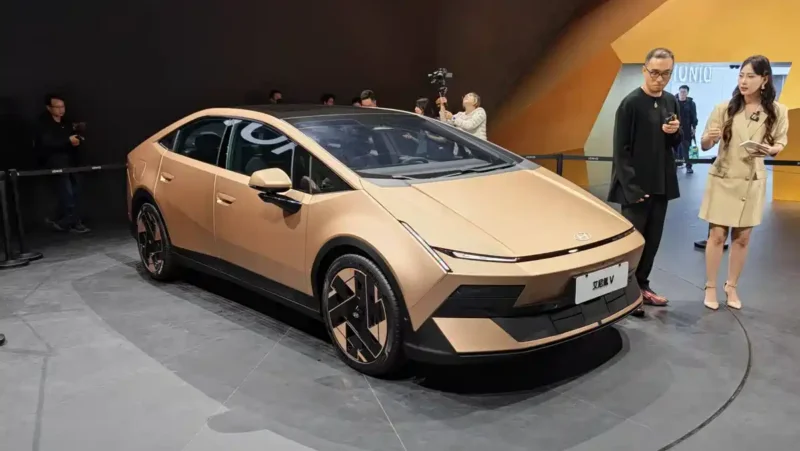
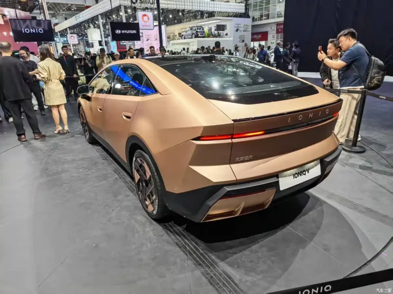
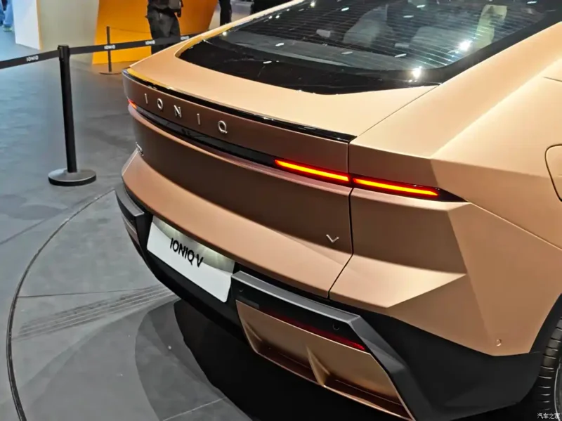

▲ 현대차가 중국 전용으로 개발한 전기 세단 '아이오닉 V'. 9월 29일 정식 출시하며 11만9900~13만9900위안의 공격적인 가격을 책정했다
12만위안 아래로 가격을 낮추고, 27인치 화면에 중국산 AI를 얹었다. 현대차가 중국 시장만을 위해 개발한 전기 세단으로 정면승부에 나섰다.
지피코리아 보도에 따르면 현대차는 중국 전용 전기 세단 '아이오닉 V'(중국명 艾尼氪 V, 아이니커 V)를 오는 9월 29일 정식 출시한다. 가격은 11만9900~13만9900위안(약 2429만~2834만원)으로 책정돼, 12만위안 이하 진입점을 확보하며 중국 전기차 시장에서 경쟁이 가장 치열한 10만~15만위안대 가격대에 뛰어들었다. 지난 8월 청두모터쇼에서 사전예약을 시작한 데 이어 이달 정식 출시로 이어지는 수순이다.
1. 무엇을, 언제 출시하나
아이오닉 V는 현대차 중국 디자인센터가 주도해 개발한 순수 중국 전용 모델이다. 지난 4월 베이징모터쇼에서 공개된 콘셉트카 '비너스(VENUS) 콘셉트'의 양산형으로, 현대차그룹은 이를 두고 "비너스 콘셉트에서 파생된 아이오닉 V가 중국 전기차 라인업에 새로운 디자인 언어 '디 오리진(The Origin)'을 처음 도입한 모델"이라고 설명했다. 현대차가 중국 소비자 취향과 가격 민감도를 겨냥해 처음부터 별도로 기획한 차량이다. 차체 크기는 길이 4900mm, 너비 1890mm, 높이 1470mm, 휠베이스 2900mm로 중형 세단급 실내 공간을 확보했다.
출시일은 9월 29일로 확정됐으며, 지피코리아는 이번 출시를 두고 "가격·AI 승부수"라고 표현했다. 그만큼 이번 모델의 무게중심은 스펙 자체보다 가격 경쟁력과 현지화된 AI 기능에 실려 있다.

▲ 아이오닉 V 공개 행사 모습. 현대차 중국 디자인센터가 주도해 개발한 순수 중국 전용 모델이다

▲ 전시장에서 공개된 아이오닉 V. 4월 베이징모터쇼에서 선보인 '비너스 콘셉트'의 양산형 모델이다
2. 왜 12만위안 밑으로 내렸나 — 가격 전략
중국 전기차 시장에서 10만~15만위안대는 가장 많은 모델이 몰려있는 격전지다. BYD를 비롯한 현지 업체들이 이 구간에서 가격과 사양 경쟁을 벌이고 있는 가운데, 현대차는 아이오닉 V의 시작 가격을 11만9900위안으로 설정해 12만위안 이하 진입점을 확보했다. 상위 트림 가격은 13만9900위안이다.
| 항목 | 제원 |
|---|---|
| 가격 | 11만9900~13만9900위안(약 2429만~2834만원) |
| 차체 크기 | 길이 4900 × 너비 1890 × 높이 1470mm, 휠베이스 2900mm |
| 배터리 | CATL LFP, 53.5kWh / 66.8kWh |
| 주행거리(CLTC) | 트림별 520 / 540 / 620 / 650km |
| 충전 | 800V 고전압 급속충전 시스템 |
| 최고출력 | 140kW(약 188마력) / 168kW |
| 인포테인먼트 | 27인치 4K 초광각 디스플레이, 스냅드래곤 8295 |
배터리는 CATL의 리튬인산철(LFP)을 채택했다. 53.5kWh와 66.8kWh 두 용량으로 나뉘며, CLTC 기준 주행거리는 트림에 따라 520km·540km·620km·650km 네 단계로 나뉜다. LFP 배터리는 삼원계 대비 원가가 낮아, 중국 로컬 브랜드들이 보급형 모델에 주로 채택하는 구성이다. 현대차 역시 이 조합으로 가격을 끌어내린 것으로 풀이된다. 충전은 800V 고전압 시스템을 지원해 급속충전 속도를 확보했다.

▲ 아이오닉 V 후면. 12만위안 이하 진입 가격과 CATL LFP 배터리로 중국 전기차 최대 격전지에 뛰어들었다
3. 27인치 화면에 담은 중국형 AI
아이오닉 V의 또 다른 승부수는 AI다. 실내에는 27인치 4K 초광각 디스플레이가 탑재됐고, 이를 구동하는 칩은 퀄컴 스냅드래곤 8295다. 여기에 중국 현지 AI 서비스인 바이두의 '어니봇(文心一言)'과 바이트댄스의 '더우바오(豆包)'를 인포테인먼트에 통합했다. 글로벌 모델에 자체 음성비서를 얹는 대신, 중국 소비자에게 이미 익숙한 현지 AI 서비스를 그대로 가져온 것이 특징이다.
여기에 '사이버 아이(Cyber Eye)' HUD가 더해져 운전자에게 정보를 헤드업 디스플레이 형태로 전달한다. 주행보조 기능은 중국 자율주행 업체 모멘타(Momenta)와 공동 개발했으며, 고속도로 구간에서 레벨2+ 수준의 기능을 지원한다. 현대차그룹은 이 시스템을 "다양한 주행 상황을 폭넓게 지원해 운전자 신뢰도를 높이도록 설계했다"고 설명했는데, 국내외 자체 개발 대신 현지 자율주행 전문업체와 손잡았다는 점에서 이번 모델의 '현지화' 기조를 가장 잘 보여주는 대목이다.

▲ 아이오닉 V 실내. 27인치 4K 초광각 디스플레이에 바이두·바이트댄스의 AI 서비스를 통합했다

▲ 아이오닉 V 후면 클로즈업. 가로로 긴 리어 콤비네이션 램프와 'IONIQ' 레터링이 특징이다
📍 왜 현지 AI·배터리·자율주행 파트너인가
현대차는 이번 모델에서 배터리(CATL), AI(바이두·바이트댄스), 자율주행(모멘타)까지 중국 현지 공급망을 전면적으로 활용했다. 자체 기술을 이식하는 대신, 현지 소비자에게 익숙하고 원가 경쟁력이 있는 파트너사와 손잡아 가격과 현지화 두 마리 토끼를 잡으려는 전략으로 풀이된다.
4. 20종 전동화 모델의 시작점
아이오닉 V는 단발성 모델이 아니다. 지피코리아에 따르면 현대차는 앞으로 5년간 중국 시장에 BEV(순수전기차)·EREV(주행거리 연장 전기차) 등 20종의 전동화 모델을 투입할 계획이다. 현대차그룹 발표에 따르면 아이오닉 V에 이어 2027년 상반기 중 SUV 모델이 추가로 투입되며, 중형에서 대형급까지 세그먼트를 확대할 예정이다. 이를 통해 현대차는 2030년까지 중국에서 연 50만대 판매를 목표로 제시했다. 아이오닉 V는 그 첫 결과물로, 현지 개발·현지 조달·현지 가격 전략을 결합한 모델이 앞으로도 이어질 것임을 시사한다.
중국 전기차 시장은 현지 브랜드들의 가격 공세가 거센 곳이다. 현대차가 글로벌 공용 플랫폼 대신 중국 전용 모델을 별도로 만들고, 배터리부터 AI까지 현지 파트너와 결합한 것은 그만큼 이 시장에서 로컬 업체와 동등한 조건으로 경쟁하겠다는 의지로 읽힌다.

▲ 전시장에 놓인 아이오닉 V(오른쪽). 현대차는 향후 5년간 중국에 BEV·EREV 등 20종의 전동화 모델을 투입할 계획이다
5. 요약
현대차가 중국 전용 전기 세단 '아이오닉 V'를 9월 29일 출시한다. 가격은 11만9900~13만9900위안으로 12만위안 이하 진입점을 확보했으며, CATL의 LFP 배터리(53.5kWh·66.8kWh)로 CLTC 기준 520~650km 주행거리를 낸다.
27인치 4K 디스플레이에 바이두 '어니봇', 바이트댄스 '더우바오' AI를 통합했고, 모멘타와 공동 개발한 고속도로 레벨2+ 주행보조 기능도 갖췄다. 배터리·AI·자율주행 모두 중국 현지 파트너와 결합한 것이 특징이며, 4월 공개된 '비너스 콘셉트'가 그 원형이다.
현대차는 향후 5년간 중국에 BEV·EREV 등 20종의 전동화 모델을 투입하고 2030년 연 50만대 판매를 목표로 한다. 2027년 상반기에는 SUV 모델도 추가될 예정으로, 아이오닉 V는 그 첫 걸음에 해당한다.